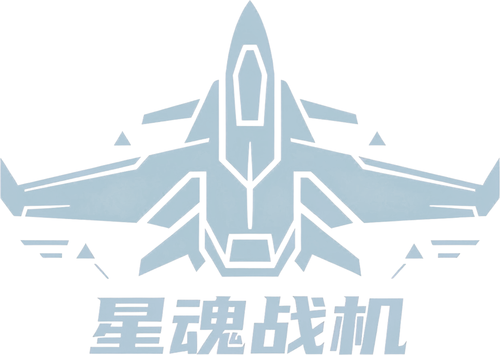

WASD 移动，鼠标 控制舰首朝向，空格 闪避推进，Shift 按住加速。
击杀敌人获得经验，升级后选择武器或被动卡牌；红色描边代表敌方危险技能，低血量时屏幕边缘会闪烁。
开局会先选择两个初始武器，然后进入第 1 关。
如果浏览器没有自动关闭页面，直接关闭当前标签页即可。普通网页通常会被浏览器限制自动关闭。
这是一款俯视角星舰 Roguelite 生存游戏。你需要一边移动走位，一边用鼠标控制舰首方向，在敌潮中收集经验、升级武器和被动，最后击败各关 Boss，并在第 10 关完成最终结算。
这里的内容与游戏内暂停菜单里的“游戏设置”保持一致。修改后会直接影响当前全局设置，进入游戏后仍然生效。